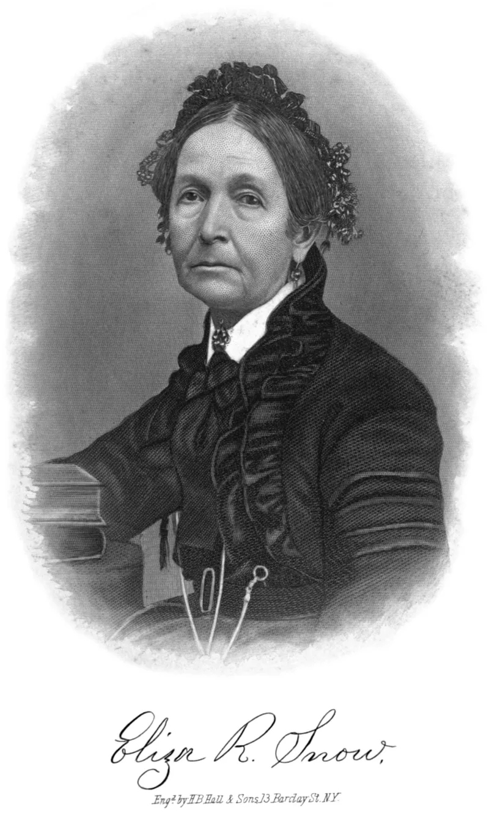

No good counter-argument has been published by LDS scholars.
The 2015 essay Mother in Heaven calls it "cherished and distinctive" doctrine that every human spirit is the child of a Heavenly Father and a Heavenly Mother. It rests on Joseph Smith's teaching of a pre-mortal spirit life — Abraham 3:22-26 and D&C 93:29 — and was carried by Eliza R.
Snow's hymn O My Father.
Two things, in its own words. That present knowledge about a Mother in Heaven "is limited." And that "there is no record of a formal revelation to Joseph Smith on this doctrine." It also directs members not to pray to her.
Nothing. The only "queen of heaven" in it is an idolatrous cult that Jeremiah condemns, at Jeremiah 7:18 and 44:17-25.
Deuteronomy 6:4 says the LORD is one. Isaiah 44:6-8 says there is no God beside him.
The essay, with a survey of some 600 historical references by David Paulsen and Martin Pulido, presents her as a reasoned consequence of restored truth. If humans are literally God's spirit children, made male and female in the divine image at Genesis 1:26-27, then eternal parenthood implies a Mother.
And silence in the Bible is not denial, because Latter-day Saints do not treat the Bible as complete. Worship still goes to the Father alone, in Christ's name.
Strong for you, and gently made. The church concedes the two facts that matter: no biblical text, and no recorded revelation.
The corollary argument is coherent inside their own premises. It supplies no scripture, and scripture is the thing at issue.
"The essay says there was no formal revelation on this. Where does it come from?"

If we are truly God's children, a Mother follows, and the Bible's silence is not a denial.
The essay makes its case as a reasoned consequence of restored truth. David Paulsen and Martin Pulido back it in BYU Studies, with a survey of some 600 references through history.
The argument runs like this. Humans are literally God's spirit children. Genesis 1:26-27 makes them 'male and female' in the divine image. If parenthood there is eternal, a Mother follows.
Silence in the Bible is not denial. Latter-day Saints do not hold the Bible to be complete on doctrine.
And prayer still goes to the Father alone, in Christ's name, as Jesus taught. So she is honoured, not worshipped.
Strong for you, gently: the essay grants no Bible text and no recorded revelation.
The core fact is conceded in the essay itself. This is an affirmed doctrine resting on no biblical text and, by the church's own admission, on no recorded formal revelation.
The argument from consequence is coherent inside Latter-day Saint premises.
But it supplies no scripture. And scripture is the thing at issue.